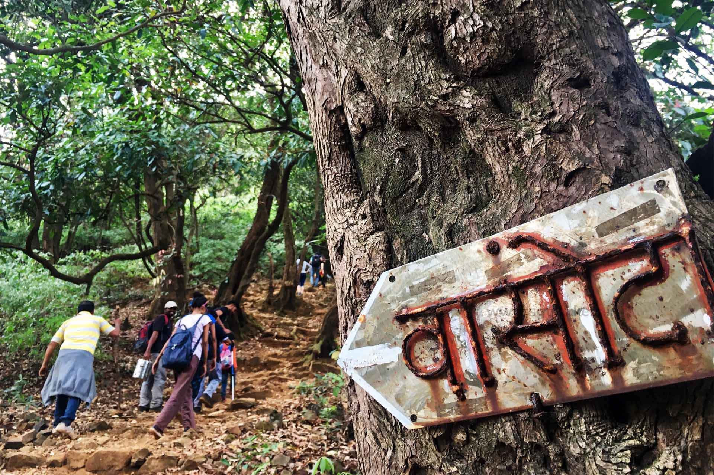
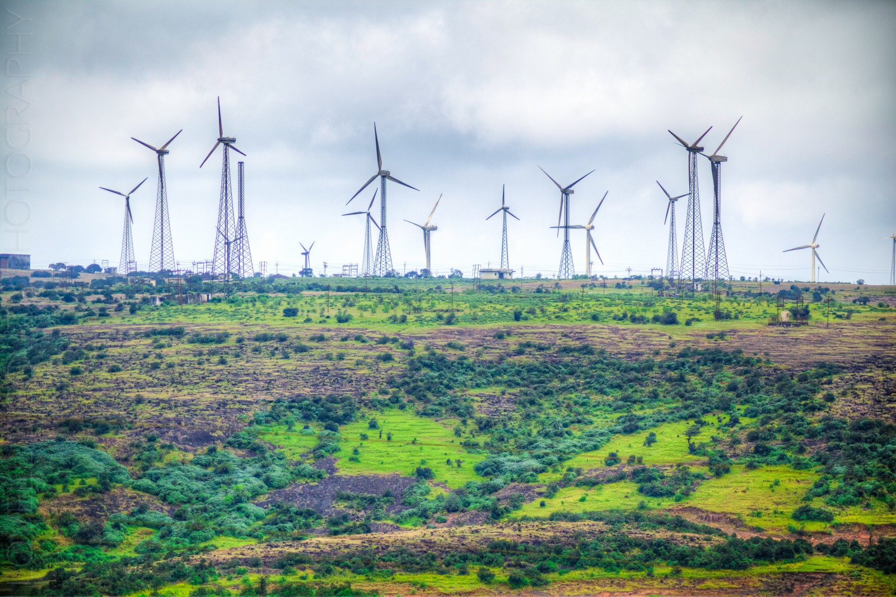
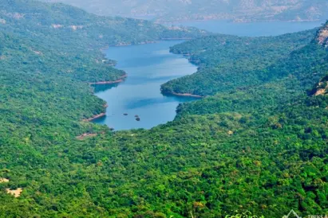
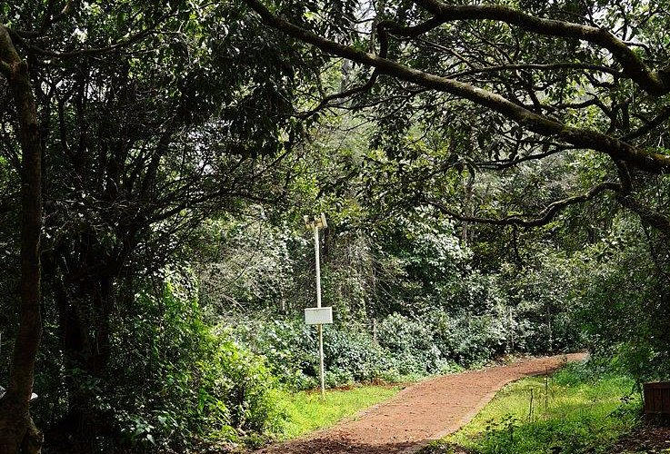

Vasota Fort is one of the most adventurous trekking destinations in satara.Situated the
Koyana wildlife Sanctuary,the trek passes through thick forests,natural streams,and narrow
jungle trails. Trekkers are rewarded with stunning view of the Shivsagar Lake from the fort top.
Near Bamnoli(Koyna backwaters)
Difficulty:Medium
Time:4-5 hours
why trek here:Dense jungle(Koyana wildlife Sanctury)
Fort + Shivsagar Lake views

Chalkewadi Windmill farm is one of the largest wind energy farms in Asia, located on a
plateu near Thoseghar in the satara
Trek type:Easy to Moderate
Duration:2-4 hours (round trip,depends on route)
Trail:Plateau walk,grasslands,mud paths,
Best for:Beginners,nature lovers,photography,monsoon treks
Trek Route:1.Chalkewadi village -> Windmill Plateau
2.Thoseghar -> Chalkewadi Plateau Trek

Location:Kanher Reservoir near satara district,Maharashtra
Approx 20-25 km from Satara city
Trek type:Easy
Duration:1.5-3 hours(round trail)
Difficulty:Easy(suitable for beginners)
Best For:Beginners,morning walk,nature lovers
The trail runs along the Reservoir edges,dam walls,and surrounding green fields.wide open
views of calm water,hills and farmland.during monsoon,the surrounding turn lush green
with small streams.

Starts near Gureghar village and goes through dense forest cover.shaded trail with tall
trees,chirping birds,and cool climate.Tiger Spring is a natural freshwater spring hidden
inside the forest,calm less crowded,and peaceful compared to tourist spots.
Trail type:Nature walk/forest trail
Difficulty level:Easy to Moderate
Duration:2-3 hours(round trip)
Terrain:Forest paths,mud trails,rocky patches
Best for:beginners,nature lovers,bird watchers

Location:pandavgad fort,near wai,satara district.Approx 28-30 km from satara,
10 km from Wai.
Trek type:fort trek
Difficulty:Easy to Moderate
Duration:2-3 hours(one way~1.5 hrs)
altitude:~1,113 meters(3,652 ft)
Trek Route:Base Village:menavali/pandavgad village,well-defined trail through
forest and rocky steps

location:Satara city, Maharashtra
trek type:Hill/Fort trek
Difficulty:Easy
Duration:45 minutes -1.5 hours(one way~45 min)
Trek route:Base point:Ajinkyatara foothill(Satara city side),well-paved road+steps,
clear and safe trail,suitable for first-time Trekkers.
At the top:Ajinkyatara fort temple,old fort walls and bastions and 360-degree view of
satara city.